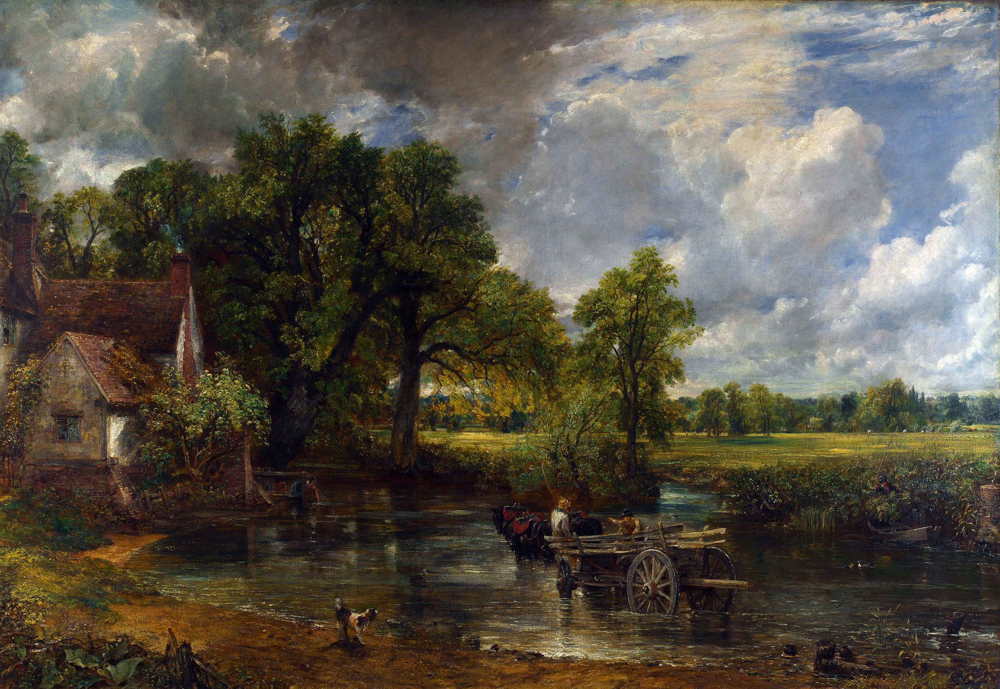

Lightroom
Isaac Newton: Prism Experiment
Newton's prism experiments demonstrated that white light is composed of different colors. Click the light source button to illuminate the prism and see the refraction.
Goethe's Mood Exploration
Goethe placed emphasis on the way in which color affects our mood, and vice versa. This demo aims to show how our emotions respond to shifts in color. Switch between four paintings depicting different times of day, and use the color buttons to see how slight shifts in color change our perception.
